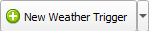

Editing Map Events¶
Events are what bring your maps to life. They include NPCs, signposts, warps, scripts, and more. Open the Events tab above the map area, and let’s dissect what’s going on.
Map Events View¶
All of the events are visible on the map. The Event Details window on the right displays the properties of the currently-selected event. If you look closely, you’ll see that the woman NPC near the Pokémon Center has a pink border around it because it’s selected. To select a different event, simple click on an event in the map area. Alternatively, you can use the spinner at the top of the event properties window. Multiple events can be selected at the same time by holding Ctrl and clicking another event.

Event Id Spinner¶
Warning
There is currently no undo/redo functionality when editing events! Use Git version control!
Event Positions¶
All events have X/Y coordinates. To move an Event, click and drag it to a new position on the map. Alternatively, you can use the X and Y spinners in the event properties.

Event Coordinates Spinners¶
Events also have an elevation, also known as Z coordinates (see image above). Elevations are explained in detail in the Collision Types section.
Next, we’ll cover each type of event in detail.
Object Events¶
Object events are typically used for NPCs (non-player-characters). More technically, it’s any event that has a sprite and the ability to move around. Object events are displayed using their assigned sprite, except for special cases. Any object event that uses a dynamic sprite will be displayed as a blue square with an N  . Some examples of dynamic sprites are the player’s rival and berry trees.
. Some examples of dynamic sprites are the player’s rival and berry trees.
Object Event Properties¶
- Id
This is the local id of the object in the map. Some script values use this local id to specify object when using scripting commands such as applymovement.
- Sprite
The sprite that is used by the object.
- Movement
The movement type used by the object during normal gameplay.
- Movement Radius X/Y
Movement types that involves walking or moving around the map can be bounded by a radius. The ensures that the object is always within the specified range from its original position.
- Script
The script that executes when the player interacts with the object.
- Event Flag
The flag value that controls if the object is visible. If the flag is set (equal to 1), then the object will be invisible. If the Event Flag is set to 0, then the object will always be visible because 0 means “no flag”.
- Trainer Type
NONE, NORMAL, or SEE ALL DIRECTIONS. If the object is a trainer, NORMAL means that the trainer will spot the player in the object’s line-of-sight.
- Sight Radius or Berry Tree ID
If the object is a trainer, this property control how many tiles the trainer can see to spot the player for battle. If the object is a berry tree, this specifies the global id of the berry tree. Each berry tree in the game has a unique berry tree id.
Warp Events¶
Warp events are how the player is able to warp to other maps, such as entering a building. Double-clicking on a warp will automatically open the destination map and select the destination warp. This makes it very easy to navigate around in Porymap.
Warp Event Properties¶
- Id
This is the local id of the warp in the map. This is used when setting the Destination Warp property for another warp.
- Destination Map
The destination map name.
- Destination Warp
The Id of the warp in the destination map.
Trigger Events¶
Trigger events are scripts that execute when the player walks over them. However, they only execute when a variable is equal some value. Typically, they execute once, set the variable’s value to something else, and then never execute again because the variable’s value no longer matches.
Trigger Event Properties¶
- Id
The local id of the trigger in the map. This value is not used for anything.
- Script
The script that executes when the player walks over the trigger AND when the Var equals the Var Value.
- Var
The variable used to determine if the trigger’s Script should execute.
- Var Value
The value that the Var must equal for the trigger’s Script to execute.
Weather Trigger Events¶
Weather trigger events are a very specific type of trigger. When the player walks over a weather trigger, the overworld’s weather will transition to the specified weather type.

Weather Trigger Event Properties¶
- Id
The local id of the trigger in the map. This value is not used for anything.
- Weather
The type of weather to transition to.
Sign Event¶
Sign events, or signposts, are simple interactable scripts. They are typically used for things like signs in front of buildings. The player’s facing direction can be required to be a certain direction in order to interact with the sign. Signs are the first of three “BG” event types.
Sign Event Properties¶
- Id
The local id of the BG event in the map. This value is not used for anything.
- Player Facing Direction
The direction the player must be facing in order to execute the sign’s script.
- Script
The script that executes when the player interacts with the sign.
Secret Base Event¶
This is the event used to mark entrances to secret bases. This event will only be functional on certain metatiles. Unfortunately, they are hardcoded into the game’s engine (see sSecretBaseEntranceMetatiles in src/secret_base.c).
Secret Base Event Properties¶
- Id
The local id of the BG event in the map. This value is not used for anything.
- Secret Base Id
The id of the destination secret base.
Adding & Deleting Events¶
To add a new event, press the green plus button.  You can choose between the different types of events by clicking the small arrow on the right.
To delete the selected event, press the delete button. 
Open Map Scripts¶
Clicking the Open Map Scripts button  will open the map’s scripts file in your default text editor. If nothing happens when this button is clicked, you may need to associate a text editor with the .inc file extension.
will open the map’s scripts file in your default text editor. If nothing happens when this button is clicked, you may need to associate a text editor with the .inc file extension.